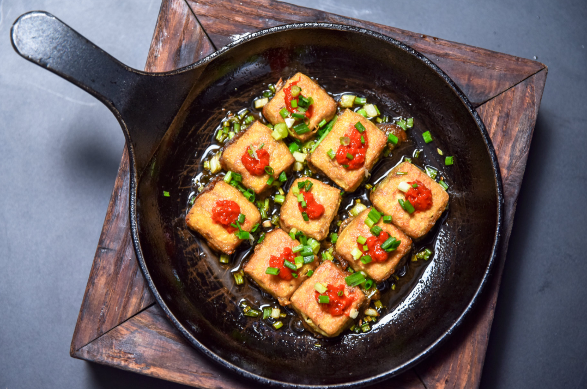
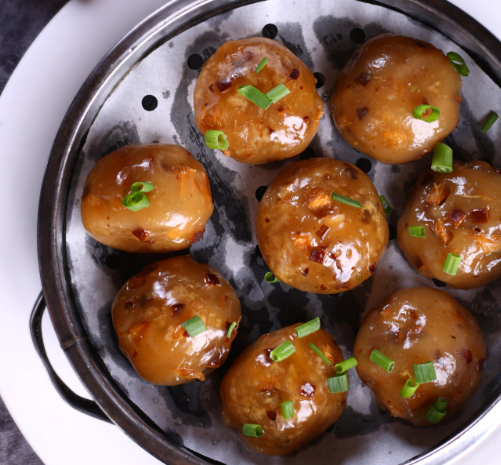

简介
简介
徽菜起源于南宋时期的徽州府(今安徽省黄山市一带，府治在今安徽歙县)， 原是徽州山区的地方风味。由于徽商的崛起，这种地方风味逐渐进入市肆， 流传于苏、浙、赣、闽、沪、鄂以至长江中、下游区域，具有广泛的影响，明清时期一度居于八大菜系之首。 主要名菜有火腿炖甲鱼、红烧果子狸、腌鲜鳜鱼、黄山炖鸽等。
特色
当年的徽菜，由于红烧是一大类，而红烧的"红"，表现在糖色上面。 对火功要求苛刻。炒菜用油是自种自榨的菜籽油， 并使用大量木材作燃料:有炭火的温炖，有柴禾的急烧，有树块的缓烧， 是比较讲究的。传统中的重油、重色、重火功，有徽州的特殊条件。
当徽菜走向全国之后，仍然保持重色:调色之功; 重油:调味之功;重火功:调质之功。 如老或嫩，硬或软，结或松等。徽菜用火腿调味是传统。 制作火腿，在徽州也是普及型的家庭技术。美食家们十分赞赏徽州火腿。 只是人们还不了解:"金华火腿在东阳，东阳火腿在徽州。"这一带古属徽州或徽州边缘，是徽商首先到达的地方。 李白在金华就留下诗名:"闻说金华渡，东连五百滩。他年一携手，摇桨入新安(即徽州)。 "唐代就从金华想到徽州，一水相连，以后来往就更频繁了。
徽菜的烹饪技法，包括刀工、火候和操作技术， 徽菜之重火工是历来的优良传统，其独到之处集中体现在擅长烧、炖、熏、蒸类的功夫菜上， 不同菜肴使用不同的控火技术是徽帮厨师造诣深浅的重要标志，也是徽菜能形成酥、嫩、香、鲜独特风格的基本手段， 徽菜常用的烹饪技法约有20大类50余种，其中最能体现徽式特色的是滑烧、清炖和生熏法。
|  毛豆腐 |
 臭鳜鱼
臭鳜鱼
|
|  葛根丸子 |
 腌笃鲜
腌笃鲜
|